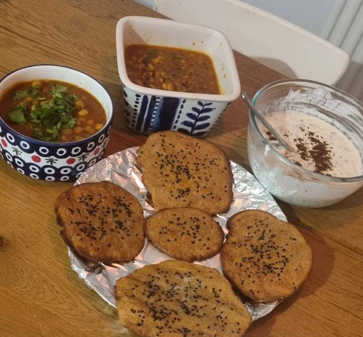

Naan Bread
Table of Content
Danger
As this recipe is based mainly on wheat gluten, it is not suitable for those with Gluten Intolerance. I am sure it's obvious but still.
Image¶

 , Category: Indian, Net Carbs per serving:
, Category: Indian, Net Carbs per serving: -
Ingredients¶
1. Water: 50 ml 2. Olive Oil: 1 tbsp 3. Sugar: 1 tsp 4. Greek Yogurt (Sour Is Better): 250 ml 5. Vital Wheat Gluten: 1 cup 6. Wheat Bran: 1/4 cup 7. Oat Flour: 1/4 cup 8. Flax Meal: 1/4 cup 9. Almond Flour: 1/2 cup 10. Baking Powder: 1 tsp 11. Salt: 1 tsp 12. Dried Yeast: 7 gms(1 sachet) 13. Onion Seeds: 1/4 tsp 14. Unsalted Butter: 5 gms -
Cookwares¶
- Roller Pin
- Bowl
- Medium Container
- Air Fryer
- Knife
-
Steps¶
- Take a medium container.
- Add water (50 ml), Olive Oil (1 tbsp), sugar (1 tsp) and mix well.
- Add Greek Yogurt (Sour is better) (250 ml) and mix well.
- Take a bowl and add vital wheat gluten (1 cup).
- Add wheat bran (1/4 cup), oat flour (1/4 cup).
- Add flax meal (1/4 cup), Almond Flour (1/2 cup)
- Add baking powder (1 tsp), salt (1 tsp), dried yeast (7 gms(1 sachet)).
- Add liquid mix to dry mix and knead for 5 minutes.
- Once consolidated, chop into 8 rolls using a knife.
- Flatten the rolls using roller pin.
- Sprinkle Onion Seeds (1/4 tsp) on top before the final go with the rolling pin.
- Leave them to rise for 2-4 hours.
- Roast each flattened dough in Air Fryer at 180C for about 2 to 2.5 minutes each side.
- Apply unsalted butter (5 gms) while hot.
- Serve with curry.
-
Process¶
Nutritional Info¶
Calculated Net Carb Info (Total Net Carbs for entire dish: 108.52)
| Ingredient | Amount | Recipe Unit | Conversion Factor | Amount used in Recipe(gms) | Net_carb/100gms | Source | Calculated Net Carb in recipe |
|---|---|---|---|---|---|---|---|
| Water | 50 | ML | 1.0 | 50.0 | 0.0 | UKDB | 0.0 |
| Olive Oil | 1 | TBSP | 15.0 | 15.0 | 0.0 | NCCDB | 0.0 |
| Sugar | 1 | TSP | 5.0 | 5.0 | 100.0 | LABEL | 5.0 |
| Greek Yogurt (Sour Is Better) | 250 | ML | 1.0 | 250.0 | 3.5 | LABEL | 8.75 |
| Vital Wheat Gluten | 1 | CUP | 240.0 | 240.0 | 15.0 | LABEL | 36.0 |
| Wheat Bran | 1/4 | CUP | 240.0 | 60.0 | 21.7 | NCCDB | 13.02 |
| Oat Flour | 1/4 | CUP | 240.0 | 60.0 | 60.0 | NCCDB | 36.0 |
| Flax Meal | 1/4 | CUP | 240.0 | 60.0 | 1.5 | LABEL | 0.9 |
| Almond Flour | 1/2 | CUP | 240.0 | 120.0 | 6.9 | LABEL | 8.28 |
| Baking Powder | 1 | TSP | 5.0 | 5.0 | 0.0 | NCCDB | 0.0 |
| Salt | 1 | TSP | 5.0 | 5.0 | 0.0 | NCCDB | 0.0 |
| Dried Yeast | 7 | GMS | 1.0 | 7.0 | 3.5 | UKDB | 0.24 |
| Onion Seeds | 1/4 | TSP | 5.0 | 1.25 | 23.5 | LABEL | 0.29 |
| Unsalted Butter | 5 | GMS | 1.0 | 5.0 | 0.7 | LABEL | 0.04 |
| Grand Total | - | - | - | - | - | - | 108.52 |
Recipe in Cooklang
>> Serving Size: 8 pieces
>> Cooking Time: 40 minutes (Prep Time - 5 Hours)
>> Category: Indian
>> Type: Vegetarian
>> Image: tandoori-naan.jpg
>> Image-Caption: Naan with Soya Curry, Chickpeas Curry and Cucumber Raita
Take a #medium container{}.
Add @water{50%ml}, @Olive Oil{1%tbsp}, @sugar{1%tsp} and mix well.
Add @Greek Yogurt (Sour is better){250%ml} and mix well.
Take a #bowl{} and add @vital wheat gluten{1%cup}.
Add @wheat bran{1/4%cup}, @oat flour{1/4%cup}.
Add @flax meal{1/4%cup}, @Almond Flour{1/2%cup}
Add @baking powder{1%tsp}, @salt{1%tsp}, @dried yeast{7%gms(1 sachet)}.
Add liquid mix to dry mix and knead for ~{5%minutes}.
Once consolidated, chop into 8 rolls using a #knife{}.
Flatten the rolls using #roller pin{}.
Sprinkle @Onion Seeds{1/4%tsp} on top before the final go with the rolling pin.
Leave them to rise for ~{2-4%hours}.
Roast each flattened dough in #Air Fryer{} at 180C for about 2 to 2.5 minutes each side.
Apply @unsalted butter{5%gms} while hot.
Serve with curry.